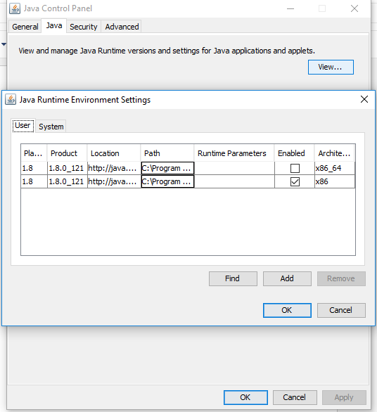
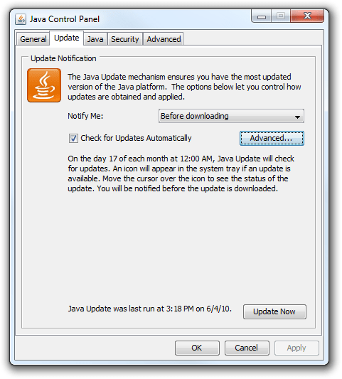

Install/update Java 8
Windows
1) How to find Java version ?
- in the taskbar's search box, type Java. If you don't have Java installed, go to step 'Install Java'.
- choose 'Configure Java' from the search results
- a 'Java Control Panel' window opens
 (preview)
(preview)
- in 'Java' tab, click on 'view' button
 (preview)
(preview)
- A window displays the list of Java installed  (preview)
- verify the version (1.8 or more) and, if necessary, go to step 'Update Java'
2) Update Java
- in 'Update' tab, click on 'Update Now' button  (preview)
- follow instructions.
3) Install Java
Linux
1) How to find Java version ?
- open a terminal.
- enter the command java -version and verify the version (1.8 or more)
- if Java is not installed or if the version number is less than 8, go to step 'Install/Update Java'
2) Install/Update Java
- open a terminal and execute :
sudo add-apt-repository ppa:webupd8team/java
sudo apt-get update
sudo apt-get install oracle-java8-set-default